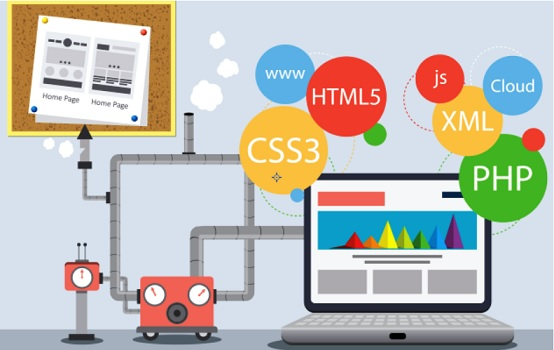

Quel langage de programmation choisir ?
Quel langage de programmation choisir ?
C’est bien beau de vouloir apprendre un langage de programmation, mais il faut savoir lequel choisir…
Connaître un langage de programmation est un atout de plus en plus important sur le marché du travail, puisque la demande en développeur de logiciels va augmenter de 17% dans les prochaines années.
Les réponses à ces questions guideront leurs premiers pas, et peut-être même toute leur carrière, puisque leur choix de langage dépendra de ces réponses. En parlant des langages, voici une liste des plus connus, pour vous aider à vous décider, des langages de programations il en existe des tas , nous allons aujourd'huis vous montrer les 4 les plus populaire.
Quel langage de programation utliser ?
1. Python
Python est un langage de programmation open source interprété côté serveur et non compilé. Créé par Guido van Rossum, il est utilisé pour le développement web, le développement de jeux-vidéos et autres logiciels, ainsi que pour les interfaces utilisateur graphiques. Il a notamment été utilisé dans la création d’Instagram, de YouTube et de Spotify, et est l’un des langages de programmation officiels de Google.
Python a plusieurs avantages: il est le langage de programmation le plus facile à apprendre; Il a de nombreux outils et fonctionnalités qui facilitent la programmation.
Cependant, il est plus lent que les scripts compilés, est peu adapté pour le développement de logiciels pour mobiles. Ses utilisateurs se plaignent souvent de son design, qui nécessitent plus de tests que pour les autres langages, et qui a des erreurs qui n’apparaissent que lors de la mise en marche. 2. JavaJava est sûrement le langage de programmation le plus connu. Il est utilisé par les développeurs pour créer et faire fonctionner des applications pour ordinateurs. Il est probablement donc en fonction sur votre ordinateur et sur votre navigateur web. Il est également utilisé sur la plupart des autres supports numériques (smartphones, consoles, logiciels).
Les développeurs connaissant Java sont très demandés. Le langage évolue sans cesse, alors le défi est permanent. Cependant, le langage Java consomme beaucoup plus de mémoire que le C++ et ses simulations sont lentes. De plus, ce n’est pas le langage le plus facile à apprendre (même si ce n’est pas le plus difficile non plus).3. CCréé entre 1969 et 1973, C est l’un des plus vieux langages de programmation. Il supporte la programmation structurée, les variations de lexique et les récusions, tandis qu’un système de type statique empêche beaucoup d’opérations accidentelles. Ce langage est utilisé pour les systèmes d’exploitation, le développement de logiciel, et le hardware.
Le langage C a l’avantage de permettre le développement de logiciels pouvant fonctionner sur différentes plateformes sans trop de modifications. De plus, il est assez simple et peut donc être intégré sur presque n’importe quel microprocesseur moderne.
Le plus grand avantage de ce langage est que les langages de programmation contemporains en sont quasiment tous plus ou moins dérivés. Ainsi, une fois que l’on connaît le langage C, les autres langages deviennent beaucoup plus simples. Mais le langage C n’a aucun mécanisme de vérification concernant l’exécution, ne supporte pas la programmation orientée objet (ce qui est la raison pour laquelle le langage C++ a été créé), et n’est pas très facile à apprendre.4. C++C++ est un langage de programmation orientée objet (comblant les lacunes du langage C) considéré comme le meilleur langage quand il s’agit de créer des applications à grande échelle. Il est notamment utilisé pour développer des logiciels, des systèmes d’exploitation, des jeux vidéos et des moteurs de recherche. Apprendre ce langage vous fera remarquer et vous permettra de programmer une application qui fonctionnera tout en respectant les capacités de votre ordinateur.
Par contre, il faut savoir que le C++ est un langage très difficile à apprendre, car très complexe.5. JavaScriptJavaScript est souvent utilisé comme un langage de script côté client, ce qui signifie que son code est inscrit dans une page HTML. Quand un utilisateur affiche une page ayant JavaScript, le script est envoyé au navigateur, qui doit alors réagir. On retrouve JavaScript dans les devantures de sites, les outils analytiques, les widgets et les interactions web. Ce langage de programmation est très facile à apprendre, et peut être utilisé avec d’autres langages. En plus, ses fonctions peuvent être exécutées immédiatement. Les seuls inconvénients sont le fait que JavaScript peut être exploité en tant que brèche de sécurité, et le fait qu’il peut être interprété différemment selon les navigateurs.6. C#C# est un langage de programmation puissant et flexible, qui peut être utilisé pour des logiciels et applications divers. Avec ce langage, vous pouvez généralement développer ce que vous voulez. De plus, avec la bibliothèque .NET, vous avez accès à un grand répertoire de fonctionnalités. Ce n’est pas le seul avantage : la structure que vous apprenez avec C# est basée sur C, alors elle peut être transférée à d’autres langages de programmation. Tout comme C++, le C# est difficile à apprendre et n’a aucune capacité multiplateforme. Mais le jeu en vaut la chandelle car les codeurs qui le maîtrisent sont parmi les plus demandés.
En resumé , tout depend du contexte et de ceque l'on veut en faire , tout langage est le meilleur dans le domaine qui lui est propre.
